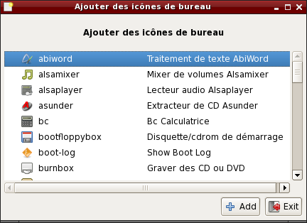

Openbox
- Introduction et présentation d'Openbox.
- Configuration d'Openbox.
- Thèmes graphiques.
- Menu contextuel.
- Applications démarrées automatiquement.
- Fond d'écran et icônes.
- Effets visuels.
Introduction et présentation d'Openbox
Openbox est un gestionaire de fenêtre ultra rapide, simple, efficace, thémable à souhait et ne consommant pas toutes les ressources du système, c'est le gestionnaire de fenêtres par défaut sur SliTaz. Un gestionnaire de fenêtres est une application tournant au dessus du serveur X, permetant de contrôler l'apparence des fenêtres, d'ouvrir un terminal X ou d'afficher des applications. Il permet ensuite de placer, de réduire, et de dimensionner les fenêtres à son propre gré.
Openbox fournit un menu contextuel via un clique droite sur le bureau, ce
menu est modifiable en éditant un fichier de configuration, la combinaison
des touches ALT + tabulation permet de lister et naviguer parmi
les fenêtres ouvertes. Par défaut SliTaz propose 4 bureaux virtuels avec
Openbox et Obconf pour configurer graphiquement le gestionnaire de fenêtres
ainsi que divers petits outils spécifiques à SliTaz afin d'avoir un bureau
simple, élégant et cohérant.
Le bureau fourni par SliTaz respect les standards de Freedesktop, le gestionnaire de fichiers PCmanFM du projet LXDE permet d'avoir la gestion des icons sur le bureau, le glissé-déposé (drag and drop) et le montage des périphériques en un clique. Le panel fournissant le menu, la barre des tâches, les icons, etc est propulsé par LXpanel.
Configuration d'Openbox
La plus part des options d'Openbox peuvent être configurées graphiquement
via l'utilitaire OBconf se trouvant le menu "Préférences" → "Configuration
d'Openbox". Le fichier de configuration peut aussi être modifié via votre
éditeur de texte préféré, le fichier de configuration se trouve dans votre
répertoire personnel: ~/.config/openbox/rc.xml, c'est un fichier
XML comme pour le menu. Les raccourssis clavier sont définis dans la section
<keyboard> du fichier de configuration.
Thèmes graphiques
Openbox est entièrement thèmable via un seul fichier ayant une syntaxe
propre au gestionnaire de fenêtres. Par défaut plusieurs thèmes sont fournis,
ils sont séléctionnables via OBconf et installés dans /usr/share/themes.
Chaque utilisateur du système peut installer ces propres thèmes dans le
répertoire personnel ~/.themes manuellement ou via l'interface
de configuration OBconf. Si vous voulez créer votre propre thème, le plus
simple est de copier et renommer un thème existant pour ensuite éditer
le fichier themerc. En option des thèmes utilisent des images
pour les boutons inconifier, maximiser et fermer, ces images peuvent
être recrées ou modifiées via un éditeur d'images tels que mtPaint ou Gimp.
Sur internet vous trouverez beaucoup de thèmes créer par la communauté, plus d'informations sur le site officiel d'Openbox.
Menu contextuel
Le menu contextuel se trouve dans le fichier: ~/.config/openbox/menu.xml,
la syntaxe de ce fichier XMl est simple et facile à comprendre. Il est aussi
possible de modifier ce menu graphiquement avec obmenu mais
pas installé par défaut. Exemple pour ajouter une aplication dans un des
sous menus:
<item label="File Manager"> <action name="Execute"><command>pcmanfm</command></action> </item>
Les sous menus sont définis à la fin du fichier via la balise menu.
La balise menu peut utiliser un pipe pour affichier les entrées de menu,
c'est à dire un script qui crée les entrées à la volée. SliTaz propose par
défaut un pipe menu qui permet d'ouvrir directement vos répertoires
favoris avec le gestionnaire de fichiers PCmanFM. Le script se trouve dans
/usr/lib/openbox et peut être utilisé comme example.
Applications démarrées automatiquement
Lors du lancement de votre session graphique, Openbox permet de démarrer
divers applications automatiquement via le script:
~/.config/openbox/autostart.sh. Par défaut SliTaz propose
un script démarrant le gestionnaire de fichiers PCmanFM pour la gestion
du fond d'écran et des icons de bureau, le panel (LXpanel) avec le menu,
Dbus et Ivman pour la gestion des périphériques ou media tel que les
clés USB. Pour ajouter ou supprimer des application lançées au démarrage
de la session vous pouvez éditer le script ou utiliser la petite interface
graphique de SliTaz via le menu "Préférences" → "Auto started applications":

Fond d'écran et icônes
Openbox ne propose pas la gestion du fond d'écran nativement, il faut
utiliser un outils externe. Cela permet plus de libérté et de choix, par
défaut, le bureau SliTaz utilise le gestionnaire de fichier PCmanFM pour
afficher un image en fond d'écran et avoir des icons de bureau.
Alternativement il est possible d'utiliser le paquet hsetroot
pour afficher un image ou xsetroot pour avoir une couleur
unie. PcmanFM est démarré avec la session Openbox en mode démon, c'est à
dire qu'il tourne en fond et ce lance plus rapidement. Pour modifier
l'image de fond décran vous pouvez passer par les préférences du
gestionnaire de fichier ou le menu "Préférences" → "Fond d'écran"
Les icônes sont affichés via de simples fichiers texte suivant les standards Freedesktop, vous pouvez en créer vous-même ou les personnaliser en les éditant via votre éditeur de texte préféré. Pour facilement ajouter des icônes sur le bureau, SliTaz fourni une petite box graphique accessible via le menu "Préférences" → "Desktop icons" ou le menu contextuel d'Openbox "Desktop Files & Icons" → "Add new icon":
Effets visuel
SliTaz fournit plusieurs petits outils permettant d'avoir des effect
graphiques sur les fenêtres d'Openbox et les divers menus. Vous pouvez
rendre un fenêtre transparente ou avoir des ombres donnant un effet de
profondeur au bureau. Les effets sont obtenus via xcompmgr
(Composite Manager), la transparence via transset-df
et peuvent être activés en même temps que la session Openbox et via le
menu contectuel "Desktop Effects".